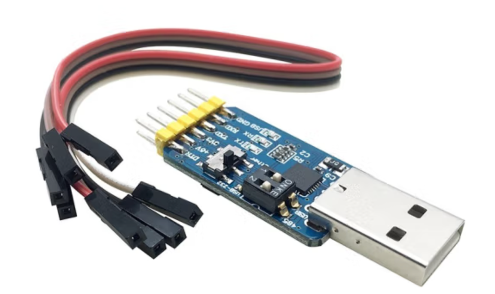

Chapter1 串口调试配置
目录
macOS 13.0.1 串口调试配置
目的:通过macOS连接到开发板，执行相关指令。
实验所需工具
-
MacBook Pro macOS 13.0.1（一台）
-
华山派risc-v 64开发板（1块）
-
USB 转 TTL 串口工具（1个）
-
Type-C扩展坞（1根）
-
TYPE C 接口电源线（1根）
| 设备名 | 图例 |
|---|---|
| 华山派risc-v 64开发板 | |
| USB 转 TTL 串口工具：通过串口连接到开发板 |  |
| Type-C扩展坞：用于将USB和网口转化为Type C，接入macOS |  |
下载串口驱动
下载地址: https://www.prolific.com.tw/US/ShowProduct.aspx?p_id=229&pcid=41
解压、安装PL2303HXD_G_Mac Driver_v2_1_0_20210311.zip后重启电脑
通过串口连接板子
-
将板子与电脑连接
开发板的TX连串口工具的RX，开发板的RX连串口工具的TX
-
查看串口设备信息
ls /dev/ | grep usb cu.usbserial-14310 tty.usbserial-14310 #此设备,注意,名称可能会有所不同 -
使用串口终端工具screen连接板子
#screen连接 screen /dev/tty.usbserial-14310 115200 #连接成功后进入系统 [root@cvitek]~# #备注: 系统密码为cvitek
其它推荐
串口调试助手: 一款图形化串口调试工具，通过app store安装